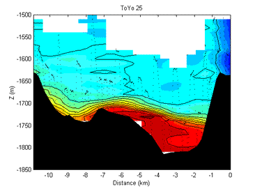
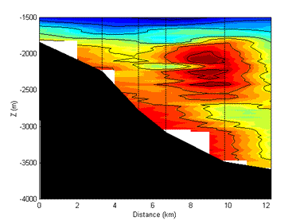

Past Research Project: Overflow Plumes
Overflow into the Deep Caribbean: Effects of Plume Variability
As a postdoc at the University of Miami I participated in the "CaribVent" field program, working on the flow of density currents into the abyssal Caribbean with Claes Rooth and Bill Johns. To analyze our data I used our moored observations to constrain the time-dependent overflow initial conditions. I then used a numerical gravity current model (Baringer and Price's) to understand the effects of having significant temporal variation of the initial plume density. Such overflow plumes are of crucial importance to the global overturning circulation because they are the way in which most deep watermasses are initially formed. I then developed a diagnostic model of how the different plumes build up the stratification within the deep Caribbean. The important result was that by having plumes of different density, descending to different depths, one could essentially build the Caribbean stratification in place, with much less requirement for turbulent mixing within the basin. This relates to the major ongoing debate within Physical Oceanography concerning where and how much diapycnal mixing occurs in the deep ocean (MacCready et al, 1999). I extended the plume modeling to the case of the 'waterfall' of coral bank water flowing into Exuma Sound in the Bahamas. This was done with Barbara Hickey, who did the main observations and analysis there, and is published as Hickey, et al., (2000).
|  | At the left is plotted salinity at Jungfern Sill, from Toyo-Measurements. This is one of two locations where mid-depth Atlantic water spills into the Caribbean. The Toyo path is shown as a dotted line. |
| Here is a plot of salinity 50 km downstream from Jungfern, from CTD casts. The overflow plume is much more diffuse, and spreads down the slope as both a boundary trapped current and as an interior watermass. The latter is an expression of the tendency of the overflow to often form mid-depth water instead of only bottom water. |  |
REFERENCES
- MacCready, P., W. E. Johns, C. G. Rooth, D. M. Fratantoni, & R. A. Watlington 1999: Overflow into the Deep Caribbean: Effects of Plume Variability. J. Geophys. Res., 104, 25913-25935.
- Hickey, B. M., P. MacCready, E. Elliott, and N. B. Kachel, 2000: Dense saline plumes in Exuma Sound, Bahamas. J. Geophys. Res., 105, 11471-11488.